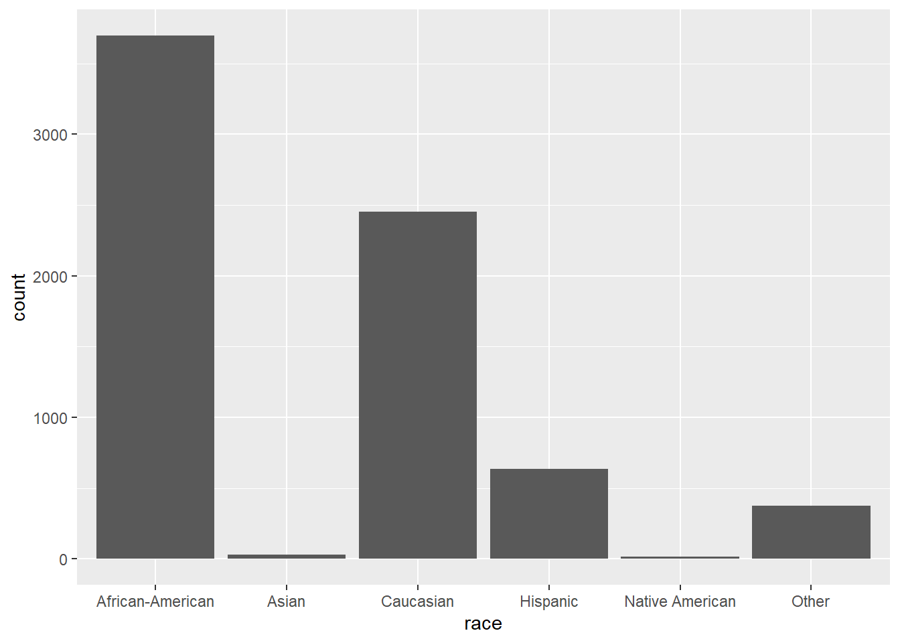
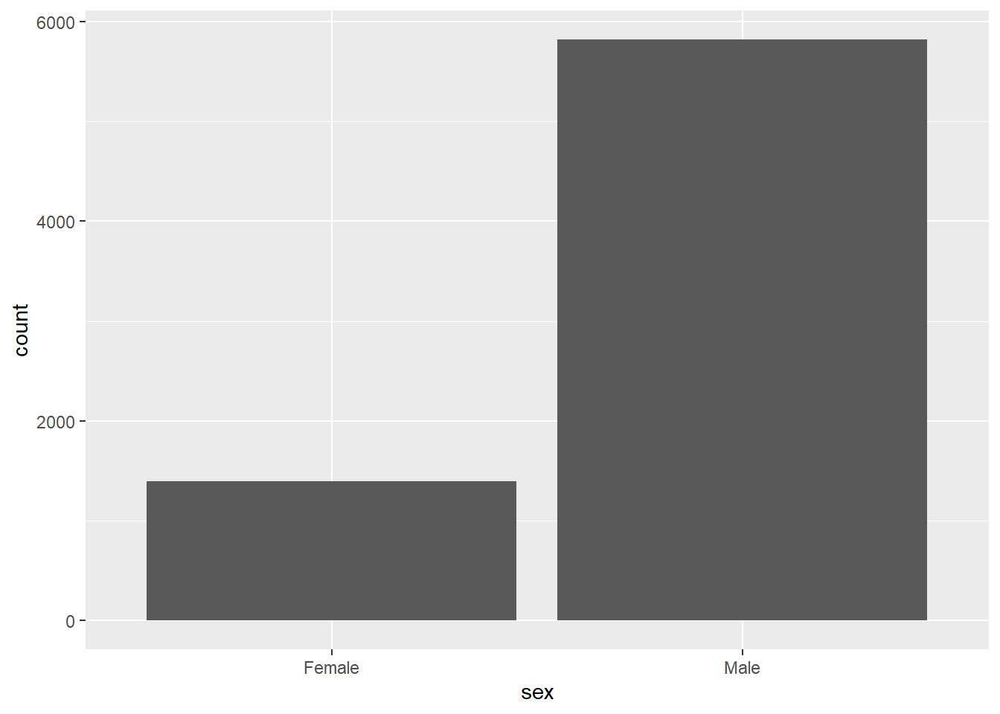
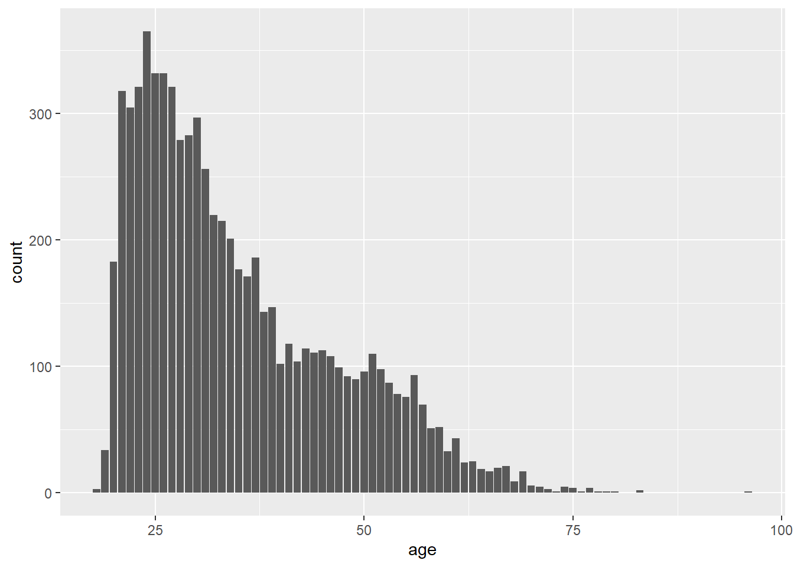
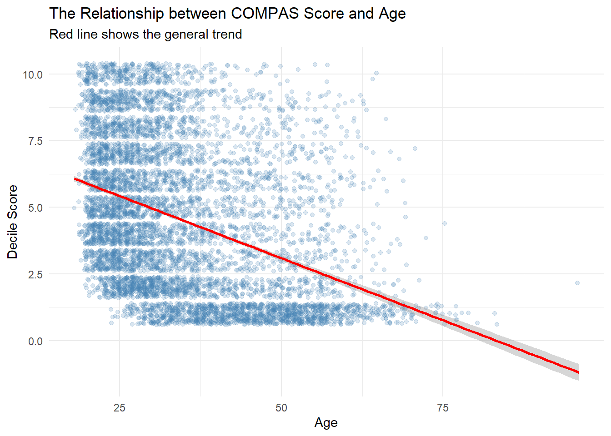
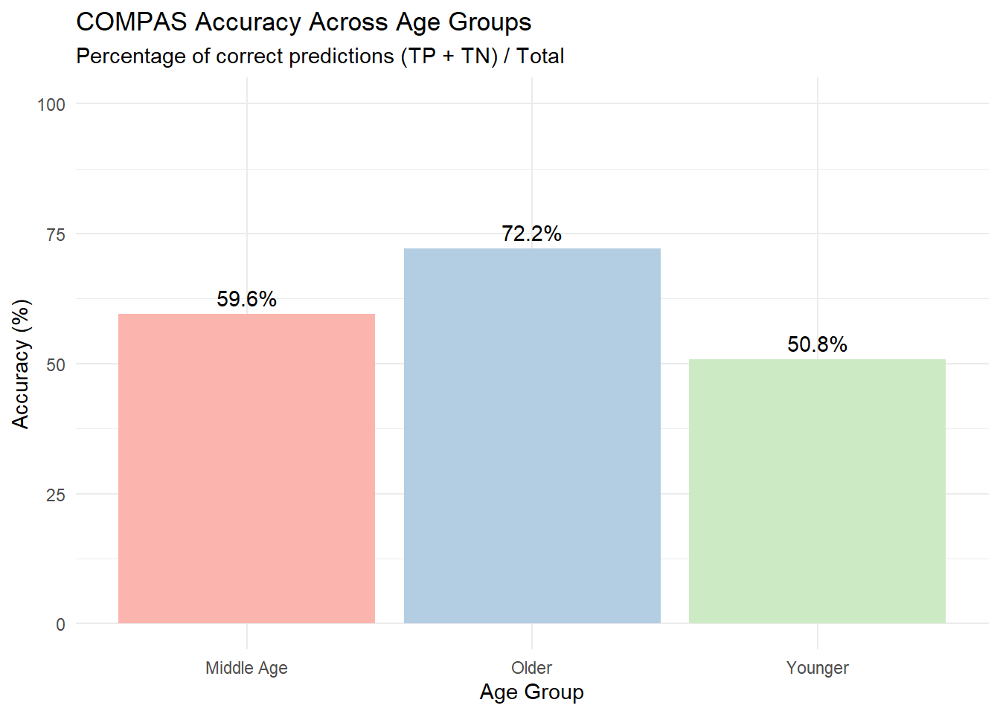
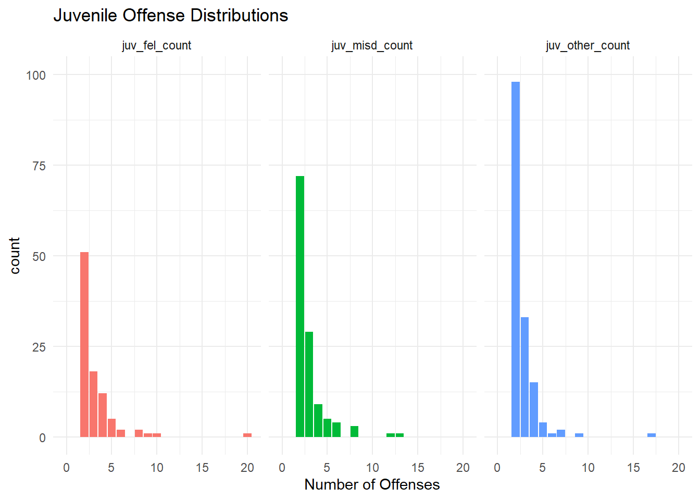

For this portfolio piece, I really want to expand on Lab 9. I’m especially interested in plotting some more of the variables that we weren’t able to examine there. While I don’t have specific hypotheses, I do want to practice visualizing comparisons between groups.
library(tidyverse)## ── Attaching core tidyverse packages ──────────────────────── tidyverse 2.0.0 ──
## ✔ dplyr 1.1.4 ✔ readr 2.1.6
## ✔ forcats 1.0.1 ✔ stringr 1.6.0
## ✔ ggplot2 4.0.1 ✔ tibble 3.3.1
## ✔ lubridate 1.9.4 ✔ tidyr 1.3.2
## ✔ purrr 1.2.1
## ── Conflicts ────────────────────────────────────────── tidyverse_conflicts() ──
## ✖ dplyr::filter() masks stats::filter()
## ✖ dplyr::lag() masks stats::lag()
## ℹ Use the conflicted package (<http://conflicted.r-lib.org/>) to force all conflicts to become errorslibrary(fairness)## Warning: package 'fairness' was built under R version 4.5.3library(janitor)## Warning: package 'janitor' was built under R version 4.5.3##
## Attaching package: 'janitor'
##
## The following objects are masked from 'package:stats':
##
## chisq.test, fisher.testlibrary(readr)
compas <- read_csv("compas-scores-2-years.csv") %>%
clean_names() %>%
rename(
decile_score = decile_score_12,
priors_count = priors_count_15
)## New names:
## Rows: 7214 Columns: 53
## ── Column specification
## ──────────────────────────────────────────────────────── Delimiter: "," chr
## (19): name, first, last, sex, age_cat, race, c_case_number, c_charge_de... dbl
## (19): id, age, juv_fel_count, decile_score...12, juv_misd_count, juv_ot... lgl
## (1): violent_recid dttm (2): c_jail_in, c_jail_out date (12):
## compas_screening_date, dob, c_offense_date, c_arrest_date, r_offe...
## ℹ Use `spec()` to retrieve the full column specification for this data. ℹ
## Specify the column types or set `show_col_types = FALSE` to quiet this message.
## • `decile_score` -> `decile_score...12`
## • `priors_count` -> `priors_count...15`
## • `decile_score` -> `decile_score...40`
## • `priors_count` -> `priors_count...49`To begin, I’ll plot the demographics to re-orient myself to the pattern of the data.
ggplot(compas, aes(x = race)) +
geom_bar()
ggplot(compas, aes(x = sex)) +
geom_bar()
ggplot(compas, aes(x = age)) +
geom_bar()
I didn’t note this before but the distribution of the data shows that a lot of younger individuals are present in the data but there is someone who is approaching 100 years old. Because of this outlier, I think it would be interesting to see the relationship between age and compas risk score. Are younger people more likely to be rated as higher risk? Is the algorithm more accurate for younger individuals.
To begin, I again need to replicate the accuracy scores from Lab 9.
compas <- compas %>%
mutate(classification = case_when(
decile_score >= 7 & two_year_recid == 1 ~ "TP",
decile_score <= 4 & two_year_recid == 0 ~ "TN",
decile_score >= 7 & two_year_recid == 0 ~ "FP",
decile_score <= 4 & two_year_recid == 1 ~ "FN")
)
results <- table(compas$classification)
print(results)##
## FN FP TN TP
## 1216 644 2681 1351correct <- results["TP"] + results["TN"]
cases <- results["TP"] + results["TN"] + results["FP"] + results["FN"]Now, I want to plot the relationship between age and decile score.
ggplot(compas, aes(x = age, y = decile_score)) +
geom_jitter(alpha = 0.2, color = "steelblue") + geom_smooth(method = "lm", color = "red") +
labs(
title = "The Relationship between COMPAS Score and Age",
subtitle = "Red line shows the general trend",
y = "Decile Score",
x = "Age"
) +
theme_minimal()## `geom_smooth()` using formula = 'y ~ x'
From the graph, it’s clear that there’s a negative relationship between age and compas scores such that greater risk scores are associated with younger individuals.
Now, I aim to compare the accuracy of the algorithm for younger individuals and older individuals. To do so, I’ll first need to determine what is younger and what is older. I could do this one of two ways; I could make two large bins including a younger group and an older group or I could make three groups which will include a younger group, a middle age group, and an older group. I would arguably like to pursue the second option because the first option would require me to join 20 year olds with almost 40 year olds. The maturity gap is much too large for that to be a reasonable choice. As such, I’ll designate anyone 30 and younger into the ‘Younger’ group, anyone from 31 to 60 into the ‘Middle Age’ group and everyone 61 years old and older into the ‘Older’ group.
compas <- compas %>%
mutate(age_group = case_when(
age <= 30 ~ "Younger",
age >= 31 & age <= 60 ~ "Middle Age",
age >= 61 ~ "Older"
))
table(compas$age_group)##
## Middle Age Older Younger
## 3611 230 3373Due to the nature of the sample, there are less individuals in the older group than the Middle Age and Younger groups. Regardless, we can now examine the differences in accuracy across age groups.
age_accuracy_summary <- compas %>%
group_by(age_group) %>%
summarize(
correct = sum(classification %in% c("TP", "TN")),
total = n(),
accuracy_pct = (correct / total) * 100
)
ggplot(age_accuracy_summary, aes(x = age_group, y = accuracy_pct, fill = age_group)) +
geom_col() +
geom_text(aes(label = paste0(round(accuracy_pct, 1), "%")), vjust = -0.5) +
labs(
title = "COMPAS Accuracy Across Age Groups",
subtitle = "Percentage of correct predictions (TP + TN) / Total",
x = "Age Group",
y = "Accuracy (%)"
) +
ylim(0, 100) +
theme_minimal() +
scale_fill_brewer(palette = "Pastel1") +
theme(legend.position = "none")
From the results, it’s clear that accuracy was highest for older individuals than for younger individuals, despite having less cases present in the data. It is possible that younger individuals are viewed as higher risk because of a lack of maturity but there may also be more information on older individuals in the system (that contributes to compas scores) that makes predicting recividism more accurate than younger and middle age counterparts.
Beyond some of the work done for lab 9, I also wanted to examine some other variables that were not included in lab 9. Specifically I’d like to look at juvenile crimes. To do so, I need to make another, younger, age group that accounts for only individuals under 18. Then I’ll make a graph looking at number of juvenile felonies, number of juvenile misdemeanors, and number of other juvenile offenses.
compas_18 <- compas %>%
mutate(age_group = factor(case_when(
age < 18 ~ "Under 18")))
compas_18 %>%
select(juv_fel_count, juv_misd_count, juv_other_count) %>%
pivot_longer(cols = everything(), names_to = "offense_type", values_to = "count") %>%
ggplot(aes(x = count, fill = offense_type)) +
geom_bar(show.legend = FALSE) +
facet_wrap(~ offense_type) +
ylim(0, 100) +
labs(title = "Juvenile Offense Distributions", x = "Number of Offenses") +
theme_minimal()## Warning: Removed 6 rows containing missing values or values outside the scale range
## (`geom_bar()`).
These graphs show that most juveniles engaged in offenses that did not fall into the misdemeanor or felony categories.